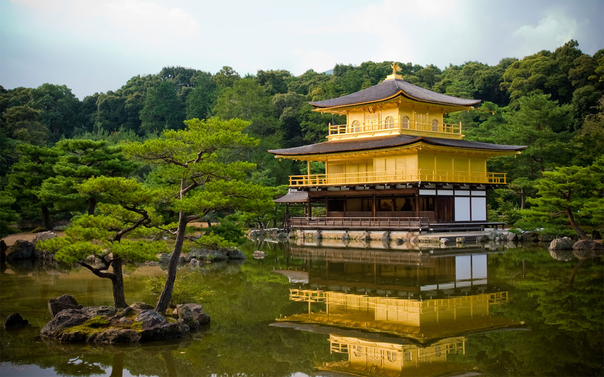

Chureito Pagoda
Famous for it's view!

Sensō-ji
Named as "The Most Beautiful Temple" By Locals!

Kinkaku-ji
The Golden Temple
Famous for it's view!
Named as "The Most Beautiful Temple" By Locals!
The Golden Temple